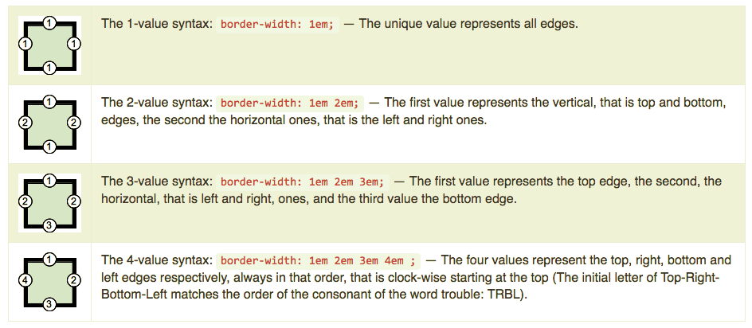
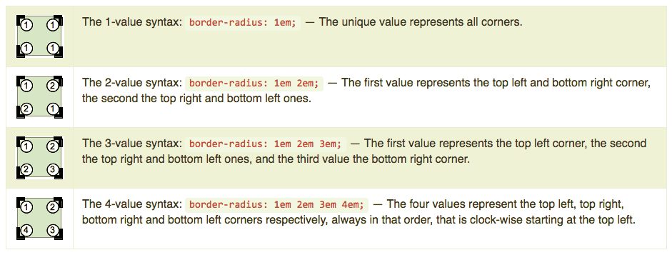
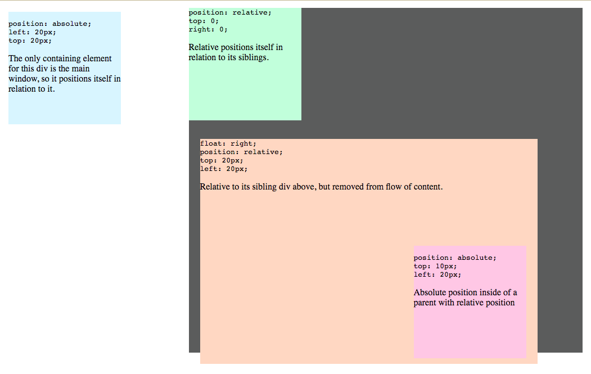
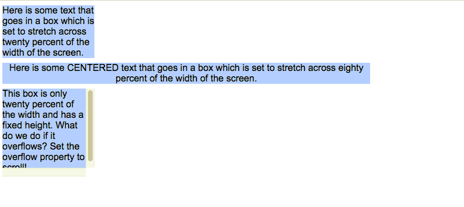

CSS controls the visual presentation and styling of HTML elements, including colors, fonts, spacing, layouts, and
responsive design for different screen sizes. It works alongside HTML (which defines content structure) to create
visually appealing and well-organized web pages.
CSS saves development time through reusable styling, improves
page load speed by reducing repetitive code, and simplifies maintenance with global style updates across multiple
pages.
CSS offers superior styling capabilities compared to HTML, enables responsive design for multiple
devices, and follows modern web standards for future browser compatibility.
How/Where to Use CSS
CSS offers superior styling capabilities compared to HTML, enables responsive design for multiple devices, and
follows modern web standards for future browser compatibility.
Inline CSS: Using The Style Attribute
Inline CSS uses the style attribute directly on HTML elements, with multiple style rules separated by
semicolons(;).
These rules apply only to that specific element.
<!DOCTYPE html><html> <head> </head> <body> <h1 style="color:#36C;"> This is inline CSS </h1> </body></html>
Internal CSS: Using the <style>
Internal CSS uses the <style> element in the HTML document's <head> section to apply styles to all
matching elements. The required type="text/css" attribute specifies the MIME type, while the optional media
attribute defines target devices.
<!DOCTYPE html><html> <head> <style type="text/css" media="all"> body { background-color: linen; } h1 { color: maroon; margin-left: 40px; } </style> </head> <body> <h1>This is a heading</h1> <p>This is a paragraph.</p> </body></html>
External CSS: <link> and Bootstrap Link
External CSS uses the <link> element to connect a separate .css file to HTML documents. Required attributes
include type="text/css", href for the file path, and rel="stylesheet", with an optional media attribute for device
targeting.
Consider a simple style sheet folder and file with a name `css/style.css` having the following
rules:
@import is used to import an external stylesheet in a manner similar to the element.
Here is the generic syntax of the @import rule:
<head>@import "mystyle.css";</head>
Cascade Style Sheets Syntax
The style sheets define the color, size and position of text and other HTML tags, while the HTML files define the
content and how it is organized. Separating them allows you to change the color scheme without having to rewrite
your entire web site.
The cascading portion means that a style applied to a parent element will also apply to all children elements
within the parent. For example, setting the color of body text will mean all headings and paragraphs within the
body will also be the same color.
Basic style sheets usually modify the appearance of html tags such as <body> and <p>. When using CSS
files or style sheets within the header, we can also define classes of styles and
apply them to any element using the class="?" attribute.
CSS Syntax Outline
The whole structure is called a rule set (but often a "rule" for short.) Note also the names of the idividual
parts: selector, declaration, property, value.
Selector:
The HTML element name at the start of the rule set. It selects the element(s) to be styled (in this case, p
elements). To style a different element, just change the selector.
Declaration:
(Property + Value) A single rule like margin:10px; specifying wich of the element's properties you want to
style.
Property:
Ways in wich you can style a given HTML element. (in this case, color is a property of the p elements.) In CSS,
you choose which properties you want to affect in your rule.
Property Value:
To the right of the property, after the colon, we have the property value, to choose one out of many possible
appearances for a given property.
Each rule set (apart from the selector) must be wrapped in curly braces ({}).
Within each declaration (between property and value), you must use a colon (:) to separate the property from its
values.
Within each rule set, you must use a semicolon (;) to separate each declaration from the next one.
CSS Selectors
CSS selectors target specific HTML elements for styling. Basic selectors include element, class, and ID
selectors, along with pseudo-classes for element states.
Element Selectors
Sometimes called a tag or type selector. This basic selector chooses all elements that matches the given
name.
For example the code below use the p element selector which is for pargraphs and all paragraphs will have that
look that is in the paragraph element.
p {...}
Class Selectors
This basic selector chooses element(s) based on the value of their class attribute (Multiple class instances can
appear on a page).
The example below uses the class name index so any attribute that has the class=index will use the index
attribute.
.index{...}<p class="index">
ID Selectors
This basic selector chooses element on the page with the specified ID based on the value of its id attribute.
There should be only one element with a given ID in a document. For example, the code below we will use the id
called calm.
#calm{...}<p id="calm">
Universal Selectors
The universal selector (*) targets all elements on the page for styling.
* {...}
Attribute Selectors
This basic selector chooses nodes based on the value of one of its attributes.
The following is the syntax we usually use: [attr] [attr=value] [attr~=value] [attr|=value] [attr^=value]
[attr$=value] [attr*=value].
The code below shows that img[src] will be changed not img is self.
img[src] {...}<img src="myimage.png">
Pseudo Class Selectors:
Selects the specified element(s), but only when in the specified state, i.e. being hovered over.
a:link { color: #FF0000; }/* visited link */a:visited { color: #00FF00; }/* mouse over link */a:hover { color: #FF00FF; }/* selected link */a:active { color: #0000FF; }
Selecting Multiple Elements
You can also select multiple types of elements and apply a single rule set to all of them. Include multiple
selectors separated by commas.
p, li, h1 {color: red;}
CSS Units
Before we start our study of CSS, we need an understanding of CSS measurement units.
CSS supports a number of measurements including absolute units and relative units such as percentages and em
units.
You need these values while specifying various measurements in your style rules.
For example: border=1px solid red;
CSS has several different units for expressing a length. Many CSS properties take "length" values, such as width,
margin, padding, font-size, border-width, etc.
Length is a number followed by a length unit, such as 10px, 2em, etc. A whitespace cannot appear between the
number and the unit. However, if the value is 0, the unit can be omitted. For some CSS properties, negative
lengths are allowed. There are two types of length units: relative and absolute.
Relative Lengths
Relative length units specify a length relative to another length property. Relative length units scales better
between different rendering mediums.
The em and rem units are practical in creating perfectly scalable layout!
px: Pixels - exact size.
%: Percentage - relative to parent.
em Relative to current font size (common).
rem: Relative to root font size (common).
vw/vh: Viewport width/height (for responsive).
Absolute Lengths
The absolute length units are fixed and a length expressed in any of these will appear as exactly that size.
Absolute length units are not recommended for use on screen, because screen sizes vary so much. However, they can
be used if the output medium is known, such as for print layout. For example below we have a list of unit
descriptions
cm - Defines a measurement in centimeters.
div { margin-bottom:2cm; }
mm - Defines a measurement in millimeters.
in - inches (1in = 96px = 2.54cm)
px * - pixels (1px = 1/96th of 1in)
pt - points (1pt = 1/72 of 1in)
pc - picas (1pc = 12 pt)
* Pixels (px) are relative to the viewing device. For low-dpi devices, 1px is one device pixel (dot) of the
display. For printers and high resolution screens 1px implies multiple device pixels.
Box Model
According to the box model concept, every element on a page is a rectangular box and may have width, height,
padding, borders, and margins.
Visualizing the CSS Box Model
The first step to understanding the CSS box model is to create a clear mental picture of it. If you've ever
inspected an HTML element in Google Chrome you've seen something like this:
The CSS box model treats every element as layered rectangular boxes containing content, padding, borders, and
margins, with outer boxes wrapping inner boxes.
The CSS Box Model Broken Down
The CSS box model is made up of 5 layers. However, developers usually lump the border and outline together into
the same layer so it can be interpreted as only 4 layers.
Content: The innermost layer that contains the text or other elements of the target element.
Padding: The layer just outside the content layer. Adding space to the padding will give the visual effect of
increasing the size of the content layer.
Border: The layer surrounding the padding layer. Many times this layer will have a small width of maybe only 1
pixel. Unlike the padding and margin layers, this layer can be given color and style.
Outline: The layer surrounding the border layer. This layer many times is ignored since the border does basically
the same job. It can be manipulated in the same way as the border layer and given color and style.
Margin: The outermost layer between the target element and its parent element. Adding space to the margin will
give the visual effect of increasing the content size of the parent element.
As you can see from the rendered and styled elements above, the box model follows the same ordering of layers we
described earlier in this lesson.
From innermost to outermost:
Content
Padding
Border
Outline
Margin
Working with the Box Model
Every element is a rectangular box, and there are several properties that determine the size of that box.
The core of the box is defined by the width and height of an element, which may be determined by the display
property, by the contents of the element, or by specified width and height properties.
padding and then border expand the dimensions of the box outward from the element's width and height.
Lastly, any margin we have specified will follow the border.
Each part of the box model corresponds to a CSS property: width, height, padding, border, and margin.
Let's look these properties inside some code:
Box model example
div {border: 6px solid #949599;height: 100px;margin: 20px;padding: 20px;width: 400px;}
According to the box model, the total width of an element can be calculated using the following formula:
Using the formulas, we can find the total height and width of our example code.
Width: 20px + 6px + 20px + 400px + 20px + 6px + 20px = 492px
Height: 20px + 6px + 20px + 100px + 20px + 6px + 20px = 192px
The box model is without question one of the more confusing parts of HTML and CSS. We set a width property value
of 400 pixels, but the actual width of our element is 492 pixels. By default the box model is additive; thus to
determine the actual size of a box we need to take into account padding, borders, and margins for all four sides
of the box.
Width & Height
Every element has default width and height. That width and height may be 0 pixels, but browsers, by default, will
render every element with size. Depending on how an element is displayed, the default width and height may be
adequate. If an element is key to the layout of a page, it may require specified width and height property values.
In this case, the property values for non-inline elements may be specified.
Width
The default width of an element depends on its display value. Block-level elements have a default width of 100%,
consuming the entire horizontal space available. Inline and inline-block elements expand and contract horizontally
to accommodate their content. Inline-level elements cannot have a fixed size, thus the width and height properties
are only relevant to non-inline elements. To set a specific width for a non-inline element, use the width
property:
Width Example
div {width: 400px;}
Height
The default height of an element is determined by its content. An element will expand and contract vertically as
necessary to accommodate its content. To set a specific height for a non-inline element, use the height property:
Height Example
div {height: 100px;}
Margin & Padding
Depending on the element, browsers may apply default margins and padding to an element to help with legibility
and clarity. We will generally see this with text-based elements. The default margins and padding for these
elements may differ from browser to browser and element to element.
It is good practice to use a CSS reset to tone all of these default values down to zero. Doing so allows us to
work from the ground up and to specify our own values.
Margin
The margin property allows us to set the amount of space that surrounds an element. Margins for an element fall
outside of any border and are completely transparent in color. Margins can be used to help position elements in a
particular place on a page or to provide breathing room, keeping all other elements a safe distance away.
Margin Example
div {margin: 20px;}
Something important to notice:
One oddity with the margin property is that vertical margins, top and bottom, are not accepted by inline-level
elements. These vertical margins are, however, accepted by block-level and inline-block elements.
Padding
The padding property is very similar to the margin property; however, it falls inside of an element’s border,
should an element have a border. The padding property is used to provide spacing directly within an element.
Padding Example
div {padding: 20px;}
Border
Borders fall between the padding and margin, providing an outline around an element. The border property requires
three values: width, style, and color.
Shorthand values for the border property are stated in that order—width, style, color. In longhand, these three
values can be broken up into the border-width, border-style, and border-color properties.
These longhand properties are useful for changing, or overwriting, a single border value.
The width and color of borders can be defined using common CSS units of length and color, as we will discuss
later.
Borders can have different appearances. The most common style values are solid, double, dashed, dotted, and none,
but there are several others to choose from.
Here is the code for a 6-pixel-wide, solid, gray border that wraps around all four sides of a
<div>:
Border Example
div {border: 6px solid #949599;}
Border Style
The border-style property specifies what kind of border to display. The following values are allowed: (* The
effect depends on the border-color value)
Shorthands handling properties related to edges of a box, like border-style, margin or padding, always use a
consistent 1-to-4-value syntax representing those edges:

Tricky Border Radius
Similarly, shorthands handling properties related to corners of a box, like border-radius, always use a
consistent 1-to-4-value syntax representing those corners:

Conflicting Styles
Styles may be defined by a user, an author or a user agent (e.g., a web browser).
A user is a person viewing your web page, you are the author (who wrote the document) and the user agent is
the program used to render and display the document.
Styles "cascade", or flow together, such that the ultimate appearance of elements on a page results from
combining styles defined in several ways.
Styles defined by the user take precedence over styles defined by the user agent, and styles defined by
authors take precedence over styles defined by the user.
Most styles defined for parent elements are also inherited by child (nested) elements. While it makes sense to
inherit most styles, such as font properties, there are certain properties that we don't want to be inherited.
Consider for example the background-image property, which allows the programmer to set an image as the background of
an element. If the body element is assigned a background image, we don't want the same image to be in the background
of every element in the body of our page.
Instead, the background-image property of all child elements retains its default value of none.
HTML head section
<style type="text/css"> body { font-family: arial, helvetica, sans-serif; } a.nodec { text-decoration: none; } a:hover { text-decoration: underline; } li em { font-weight: bold; } h1, em { text-decoration: underline; }ul { margin-left: 20px; }ul ul { font-size: .8em; }</style></head>
The CSS position property allows absolute positioning, which provides greater control over where on a page
elements reside. Specifying an element's position as absolute removes it from the normal flow of elements on the
page and positions it according to distance from the top, left, right or bottom margin of its parent element.
The z-index property allows a developer to layer overlapping elements. Elements that have higher z-index
values are displayed in front of elements with lower z-index values.
Unlike absolute positioning, relative positioning keeps elements in the general flow on the page and offsets
them by the specified top, left, right or bottom value.
Element span is a grouping element—it does not apply any inherent formatting to its contents. Its primary
purpose is to apply CSS rules or id attributes to a section of text.
span is an inline-level element, it applies formatting to text without changing the flow of the document.
Examples of inline elements include span, img, a, em and strong.
The div element is also a grouping element, but it is a block-level element. This means it is displayed on its
own line and has a virtual box around it. Examples of block-level elements include div, p and heading elements
(h1 through h6).
Absolute Positioning
Before CSS, controlling the positioning of elements in an (X)HTML document was difficult—the browser determined
positioning. CSS introduced the position property and a capability called absolute positioning, which gives
authors greater control over how document elements are displayed.
The z-index property allows you to layer overlapping elements properly.
Elements that have higher z-index values are displayed in front of elements with lower z-index values.
In the previous example, bgimg.gif has the lowest z-index (1), so it displays in the background.
The .fgimg CSS rule in lines 11-14 gives the circle image (fgimg.gif, in line 27) a z-index of 2, so it
displays in front of i.gif.
The p element in line 30 (Positioned Text) is given a z-index of 3, so it displays in front of the other two.
If you do not specify a z-index or if elements have the same z-index value, the elements are placed from
background to foreground in the order they are encountered in the document.
Relative Positioning
Absolute positioning is not the only way to specify page layout. The following example demonstrates relative
positioning, in which elements are positioned relative to other elements.

Inline and Block-Level Elements
We introduce the span element in line 2. Lines 4-6 define the CSS rule for all span elements. The height of the
span determines how much vertical space the span will occupy. The font-size determines the size of the text inside
the span.
Inline and Block-Level Elements
<head><style>.super { position: relative; top: -1ex; }</style></head><body><p>The text at the end of this sentence<span class="super">is in superscript</span>.</p></body>
Inline Elements
Element span is a grouping element—it does not apply any inherent formatting to its contents.
Its primary purpose is to apply CSS rules or id attributes to a section of text.
The span element is an inline-level element—it applies formatting to text without changing the flow of the
document.
Examples of inline elements include span, img, a, em and strong.
The div element is also a grouping element, but it is a block-level element. This means it is displayed on its
own line and it has a virtual box around it.
Backgrounds
CSS provides control over the background of block-level elements. CSS can set a background color or add
background images to (X)HTML elements. In the example bellow, the author adds a corporate logo to the
bottom-right corner of the document. This logo stays fixed in the corner even when the user scrolls up or down
the screen.
background-color: The background-color property specifies the background color of an element.
background-image: The background-image property specifies an image to be used as the background of an element.
By default, the image is repeated so it covers the entire element.
background-repeat: Background Image - Repeat Horizontally or Vertically: By default, the background-image
property repeats an image both horizontally and vertically. Some images should be repeated only horizontally or
vertically, or they will look strange.
background-attachment: Background Image - Fixed position: To specify that the background image should be fixed
(will not scroll with the rest of the page), use the background-attachment property.
background-position: Background Image - Set position and no-repeat: Showing the background image only once is
also specified by the background-repeat property.
To shorten the code, it is also possible to specify all the background properties in one single property.
This is called a shorthand property. The shorthand property for background is:
Background - Shorthand Property
body {background: #ffffff url("img_tree.png") no-repeat right top;}
Element Dimensions
In addition to positioning elements, CSS rules can specify the actual dimensions of each page element. The
example below demonstrates how to set the dimensions of elements.
Element Dimensions
<head> <style type="text/css"> div{ background-color: #aaccff; margin-bottom: .5em; font-family: arial, helvetica, sans-serif } </style></head><body><div style="width: 20%">Here is some text that goes in a box which is set to stretch across twenty percent of the width of the screen.</div><div style="width: 80%; text-align: center"> Here is some CENTERED text that goes in a box which is set to stretch across eighty percent of the width of the screen.</div><div style="width: 20%; height: 150px; overflow: scroll"> This box is only twenty percent of the width and has a fixed height. What do we do if it overflows? Set the overflow property to scroll!</div></body>

The inline style style="width:20%" illustrates how to set the width of an element on the screen; here, we
indicate that the div element should occupy 20 percent of the screen width. The height of an element can be set
similarly, using the height property. The height and width values also can be specified as relative or absolute
lengths. For example:
width: 10em sets the element's width to 10 times the font size.
Most elements are left aligned by default; however, this alignment can be altered to position the element
elsewhere. text-align: center other values for the text-align property include left and right.
All CSS Dimension Properties
height: Sets the height of an element
max-height: Sets the maximum height of an element
max-width: Sets the maximum width of an element
min-height: Sets the minimum height of an element
min-width: Sets the minimum width of an element
width: Sets the width of an element
Float
The float property specifies whether or not a box (an element) should float.
Note 1: Absolutely positioned elements ignores the float property!
Note 2: Elements after a floating element will flow around it. To avoid this, use the clear property or the
clearfix hack.
none :Default. The element is not floated, and it will be displayed
just where it occurs in the text.
left: The element floats to the left.
right: The element floats to the right.
initial: Sets this property to its default value.
inherit: Inherits this property from its parent element.
Float CSS Example
<html><head> <style type="text/css"> div.heading { background-color: #bbddff; text-align: center; font-family: arial, helvetica, sans-serif; padding: .2em; } p { text-align: justify; font-family: verdana, geneva, sans-serif; margin: .5em } div.floated { background-color: #eeeeee; font-size: 1.5em; font-family: arial, helvetica, sans-serif; padding: .2em; margin-left: .5em; margin-bottom: .5em; float: right; text-align: right; width: 50% } div.section { border: 1px solid #bbddff } </style></head><body> <div class="heading"><img src="deitel.png" alt="Deitel" /></div> <div class="section"> <div class="floated">Corporate Training and Publishing</div> <p>Deitel & Associates, Inc. is an internationally recognized corporate training and publishing organization specializing in programming languages, Internet/World Wide Web technology and object technology education. The company provides courses on Java, C++, Visual Basic, C, Internet and World Wide Web programming, and Object Technology.</p> </div> <div class="section"> <div class="floated">Leading-Edge Programming Textbooks</div> <p>Through its publishing partnership with Prentice Hall, Deitel & Associates, Inc. publishes leading-edge programming textbooks, professional books, interactive CD-ROM-based multimedia Cyber Classrooms, satellite courses and World Wide Web courses.</p></div></body></html>
Media Types
screen: for presentation on non-paged computer screens
handheld: designed for mobile Internet devices
braille: for machines that can read or print web pages in braille
aural: allow the programmer to give a speech-synthesizing web browser more information about the content of
the web page
print: affects a web page's appearance when it is printed
projection: for projected presentations
tty: for character cell displays (using a fixed-pitch font)
tv: for televisions
all: or all output devices
Media Types
<head> <style type="text/css"> @media all { body { background-color: #4488aa; } h1 { font-family: verdana, helvetica, sans-serif; color: #aaffcc } p { font-size: 12pt; color: white; font-family: arial, sans-serif } } </* end @media all declaration. */> /* @media print */ { body { background-color: white } h1 { color: #008844 } p { font-size: 14pt; color: #4488aa; font-family: "times new roman", times, serif } } </* @media print declaration. */> </style></head>
Pages with dark background colors and light text use a lot of ink and may be difficult to read when printed,
especially on a black-and white-printer. Use the print media type to avoid this.
In general, sans-serif fonts look better on a screen, while serif fonts look better on paper. The print media
type allows your web page to display sans-serif font on a screen and change to a serif font when it is printed.
Media Queries
CSS media queries are a feature of CSS 3 that allow the rendering of content to adapt to different conditions,
such as screen resolution, device orientation, or user preferences. They are a cornerstone technology of
responsive web design, enabling websites to provide an optimal viewing experience across a wide range of devices.
Syntax and Structure
A CSS media query begins with the @media at-rule, followed by a media type and zero or more expressions that check
for specific media features. The CSS rules to be applied when the conditions are met are enclosed within curly
braces.
Syntax and Structure
@media and () {/* CSS rules to apply */}
Purpose
Media queries are essential for creating responsive web designs, allowing developers to tailor the user
experience based on the device and user preferences without changing the underlying HTML content. They enable
flexible layouts, adjusted font sizes, and optimized image delivery for various screen sizes and viewing
conditions.
Key Components
@media: The at-rule that initiates a media query.
<media-type>: Specifies the type of media the query applies to. Common types include:
all: Applies to all media types.
screen: Applies to screens (e.g., computer screens, tablets, smartphones).
print: Applies to printed output.
speech: Applies to speech synthesizers.
<media-feature-expression>: Checks for specific characteristics of the device or user agent. These
expressions
can be combined using logical operators (and, or, not). Common media features include:
min-width, max-width, width: Viewport width.
min-height, max-height, height: Viewport height.orientation: landscape or portrait.
prefers-color-scheme: User's preferred color scheme (light or dark).
prefers-reduced-motion: User's preference for reduced motion.
resolution: Screen resolution.
Applying styles for screens wider than 768px:
@media screen and (min-width: 768px) { body { background-color: lightblue; }}
Applying styles for screens between 480px and 768px wide:
@media screen and (min-width: 480px) and (max-width: 768px) { h1 {
font-size: 1.5em; }}
Applying dark mode styles based on user preference:
Change the background-color of the body to lightgreen, if the width of the viewport is 480px, or wider:
<style> @media screen and (min-width: 480px) { body { background-color: lightgreen; }}</style>
Use media queries to change the background color for different viewport widths:
<style>/* Base style for mobile devices */body { background-color: olive; color: white;}/* For devices with a minimum width of 768px (Medium) */@media screen and (min-width: 768px) { body { background-color: blue; color: white; }}/* For devices with a minimum width of 992px (Large) */@media screen and (min-width: 992px) { body { background-color: tan; color: black; }}</style>
Media Queries For Columns
A common use of media queries, is to create a flexible layout. In this example, we create a layout that varies
between four, two and full-width columns, depending on different screen sizes:
<style>* {box-sizing: border-box;}/* Container for flexboxes */.container { display: flex; flex-wrap: wrap;}/* Create four equal columns */.column { flex: 25%; padding: 20px;}/* On screens that are 992px wide or less, go from four columns to two columns */@media screen and (max-width: 992px) { .column { flex: 50%; }}/* On screens that are 600px wide or less, make the columns stack on top of each other instead of next to each other */@media screen and (max-width: 600px) { .container { flex-direction: column; }}</style>
Here, we use media queries to create a responsive navigation menu, that varies in design on different screen
sizes.
<style>ul { list-style-type: none; margin: 0; padding: 0; background-color: #333333; display: flex;}ul li a { display: block; color: white; padding: 14px 16px; text-decoration: none;}ul li a:hover { background-color: #111111;}/* For viewport width 600px or less, make the menu links stack on top of each other */@media screen and (max-width: 600px) { ul {flex-direction: column;}}</style><ul> <li><a href="#home">Home</a></li> <li><a href="#news">News</a></li> <li><a href="#contact">Contact</a></li> <li><a href="#about">About</a></li></ul>
Hide Elements With Media Queries
<style>/* Hide element if the viewport width is 600px or less like tablets or iphones or andriods*/@media screen and (max-width: 600px) { #div1 { display: none; }}</style>
Change Font Size With Media Queries
<style>/* If viewport width is 600px or more, set font-size to 80px like a nice flat screen tv or nice big monitor*/@media screen and (min-width: 600px) { #div1 { font-size: 80px; }}</style>
Media Queries for Screen Orientation
<style>@media only screen and (orientation: landscape) { body { background-color: lightblue; }}</style>
Building a CSS Menu:
First, create a division with five links, give the division the class menu.
One quick and easy way to keep your CSS clean and well-structured is to remember the four CSS Rules of
Multiplicity. They are:
Multiple declarations can live in a single rule.
Multiple selectors can preface the same rule set.
Multiple rules can be applied to the same selector.
Multiple classes can be set on a single element.
Multiple declarations
In a single rule is the most fundamental of the four CSS Rules of Multiplicity. Simply stated, it means you can
have as many CSS declarations as you want between your opening and closing braces.
Another way to tackle having multiple rules in common across elements is to create multiple classes.
But then
a while later, you decide you want something that is almost the same as your container class, but the text within
is larger and boldfaced. You might be tempted to write a completely new class that includes the padding, border,
background, and font size and weight that you need. But instead, you could just create a second class containing
just the differences between the two, like this:
Multiple Selectors Classes
<style> container { padding: 5px; border: 2px solid #ccc; background-color: #f2f2f2; }.strong { font-size: 150%; font-weight: bold; }</style><body> <div class="container strong"> This text is in our container, but is also big and bold. </div></body>
Using the CSS @import Rule
The @import rule is another way of loading a CSS file. You can use it in two ways. The simplest is within the
header of your document, like so:
Using the CSS @import Rule
<style>@import url('/css/styles.css');</style>
Or, you can import a style sheet from within another stylesheet. And better still, you can import any number of
styles this way.
Using the CSS @import Rule using another style sheet
@import url('/css/typography.css');@import url('/css/layout.css');@import url('/css/color.css');/* All three CSS files above will be loaded *//* from this single document. */
Issues with the @import rule
Like most cool things in CSS, this one comes with a couple of warnings:
The @import rule isn't recognized by the really old browsers out there… Netscape Navigator 4 skips over
@imports entirely, and Internet Explorer 4 ignores them if you don't use the (entirely optional, but generally
used) parentheses.
Your @imports must come before all other content in your CSS. And I mean all of your content. Even putting
comments before the @import tag will cause your imports to fail. So be sure to do your imports before you do
anything else.
Internet Explorer (you knew it'd come up eventually) doesn't deal well with specifying media types - it
chokes. Basically, IE (versions 4-7) try to read the media type like it was part of the file name, causing the
whole thing to come crashing down.
The !important declaration
When should !important be used?
The !important rule should never be used
!important declarations should not be used unless they are absolutely necessary after all other avenues have been
exhausted.
If you use !important out of laziness, to avoid proper debugging, or to rush a project to completion, then you're
abusing it, and you (or those that inherit your projects) will suffer the consequences.